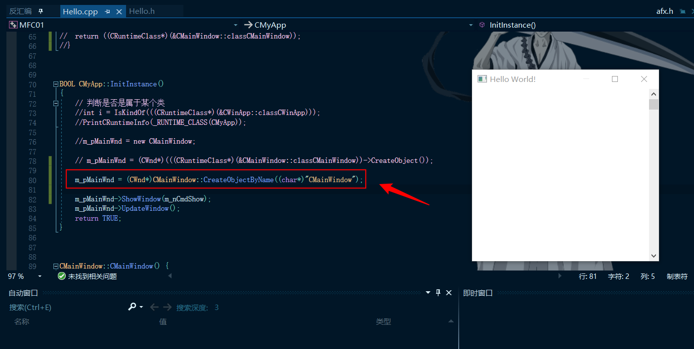

# 为什么要有动态创建？
面向对象术语中有一个名为 persistence，意思是永久保存。 放在 RAM 中的东西， 生命受到电力的左右， 不可能永久保存； 唯一的办法是把它写到文件去。
看起来永久保存与本节的主题「动态生成」 似乎没有什么干连。 有！ 你把你的数据储存到文件， 这些数据很可能（通常是） 对象中的成员变量； 我把它读出来后， 势必要依据文件上的记载， 重新 new 出那些个对象来。 问题在于， 即使我的程序有那些类定义（就算我的程序和你的程序有一样的内容好了） ， 我能够这么做吗：
char className[30] = getClassName(); // 从文件（或使用者输入） 获得一个类名称 | |
CObject* obj = new classname; // 这一行行不通 |
首先， new classname 这个动作就过不了关。 其次， 就算过得了关， new 出来的对象究竟该是什么类类型？
但我就是没办法恢复你原来的状态 —— 除非我的程序能够「动态生成」。MFC 支持动态生成， 靠的是一组的宏（ DECLARE_DYNCREATE 和 IMPLEMENT_DYNCREATE ） 和 CRuntimeClass 类。
# 本节需要掌握的知识点
1、本节必须掌握的知识点
动态创建的作用
二个关键的宏:
DECLARE_DYNCREATEIMPLEMENT_DYNCREATE
2、需要简单了解的内容
CRuntimeClass::CreateObject （动态创建函数）
# 动态创建
动态创建就是为了在程序执行期间动态获得的一个类名称。
首先继续查看 CRuntimeclass 结构体:
struct CRuntimeClass | |
{ | |
// Attributes | |
LPCSTR m_lpszClassName; // 类名称 | |
int m_nObjectSize; // 类的大小 | |
UINT m_wSchema; // 加载类的模式编号 | |
CObject* (PASCAL* m_pfnCreateObject)(); // 函数指针，定义了一个函数指针 m_pfnCreateObject 用来存放需要支持动态创建类的 CreateObject 函数 | |
#ifdef _AFXDLL | |
CRuntimeClass* (PASCAL* m_pfnGetBaseClass)(); | |
#else | |
CRuntimeClass* m_pBaseClass; // 父类指针 | |
#endif | |
// Operations | |
CObject* CreateObject(); // 动态创建函数 | |
BOOL IsDerivedFrom(const CRuntimeClass* pBaseClass) const; // 判断函数，判断是否父类 | |
// dynamic name lookup and creation | |
static CRuntimeClass* PASCAL FromName(LPCSTR lpszClassName); | |
static CRuntimeClass* PASCAL FromName(LPCWSTR lpszClassName); | |
static CObject* PASCAL CreateObject(LPCSTR lpszClassName); | |
static CObject* PASCAL CreateObject(LPCWSTR lpszClassName); | |
// Implementation | |
void Store(CArchive& ar) const; | |
static CRuntimeClass* PASCAL Load(CArchive& ar, UINT* pwSchemaNum); | |
// CRuntimeClass objects linked together in simple list | |
CRuntimeClass* m_pNextClass; // 指向下一个 CRuntimeClass 结构体指针 | |
const AFX_CLASSINIT* m_pClassInit; | |
}; |
其中我们用的到的就是：
CObject* (PASCAL* m_pfnCreateObject)(); // 函数指针，定义了一个函数指针m_pfnCreateObject用来存放需要支持动态创建类的CreateObject函数CObject* CreateObject(); // 动态创建函数
# 使用动态创建
跟进 CFramWnd 类、 CWinApp 类来看一下谁支持动态创建，也就是谁使用了相关的宏：
class CWinApp : public CWinThread | |
{ | |
DECLARE_DYNAMIC(CWinApp) | |
Public: | |
...... | |
...... |
class CFrameWnd : public CWnd | |
{ | |
DECLARE_DYNCREATE(CFrameWnd) | |
public: | |
...... | |
...... |
CFrameWnd 类使用了 DECLARE_DYNCREATE 宏，也就表示其支持动态创建。
所以我们可以在其派生的 CMainWindow 类也使用动态创建，这里宏的使用和 RTTI 宏的使用是一样的。
在类中添加如下语句 DECLARE_DYNCREATE(CMainWindow)
在类外 IMPLEMENT_DYNCREATE(CMainWindow, CFrameWnd);
然后在 CMyApp::InitInstance() 函数中把 m_pMainWnd = new CMainWindow; 替换成 m_pMainWnd = (CWnd*)(RUNTIME_CLASS(CMainWindow)->CreateObject());
运行程序，窗口正常创建出来了。
接下来分析一下动态创建用的宏。
# 宏 DECLARE_DYNCREATE
在 VS2019 中跟进一下：
#define DECLARE_DYNCREATE(class_name) | |
DECLARE_DYNAMIC(class_name) | |
static CObject* PASCAL CreateObject(); |
发现宏 DECLARE_DYNAMIC 这说明动态创建也支持 RTTI。
以 DECLARE_DYNCREATE(CMainWindow); 为例，将其展开：
public: | |
static const CRuntimeClass classCMainWindow; | |
virtual CRuntimeClass* GetRuntimeClass() const; | |
static CObject* __stdcall CreateObject(); |
# 宏 IMPLEMENT_DYNCREATE
在 VS2019 中跟进一下：
#define IMPLEMENT_DYNCREATE(class_name, base_class_name) \ | |
CObject* PASCAL class_name::CreateObject() \ | |
{ return new class_name; } \ | |
IMPLEMENT_RUNTIMECLASS(class_name, base_class_name, 0xFFFF, \ | |
class_name::CreateObject, NULL) |
发现其 IMPLEMENT_RUNTIMECLASS 与前面使用 RTTI 时的第四个参数不一样了。
以 IMPLEMENT_DYNCREATE(CMainWindow, CFrameWnd); 为例，将其展开：
CObject* __stdcall CMainWindow::CreateObject() | |
{ | |
return new CMainWindow; | |
} | |
__declspec(selectany) const CRuntimeClass CMainWindow::classCMainWindow = | |
{ | |
"CMainWindow", | |
sizeof(class CMainWindow), | |
0xFFFF, | |
CMainWindow::CreateObject, | |
((CRuntimeClass*)(&CFrameWnd::classCFrameWnd)), | |
NULL, | |
NULL | |
}; | |
CRuntimeClass* CMainWindow::GetRuntimeClass() const | |
{ | |
return ((CRuntimeClass*)(&CMainWindow::classCMainWindow)); | |
} |
# 分析动态创建
分析一下 CMyApp::InitInstance() 函数中的 m_pMainWnd = (CWnd*)(((CRuntimeClass*)(&CMainWindow::classCMainWindow))->CreateObject());
在 VS2019 中下断点跟进查看：
CObject* CRuntimeClass::CreateObject() | |
{ | |
ENSURE(this); | |
if (m_pfnCreateObject == NULL) | |
{ | |
TRACE(traceAppMsg, 0, | |
_T("Error: Trying to create object which is not ") | |
_T("DECLARE_DYNCREATE \nor DECLARE_SERIAL: %hs.\n"), | |
m_lpszClassName); | |
return NULL; | |
} | |
CObject* pObject = NULL; | |
TRY | |
{ | |
pObject = (*m_pfnCreateObject)(); | |
} | |
END_TRY | |
return pObject; | |
} |
先进入了 CRuntimeClass::CreateObject() 然后调用了函数指针 pObject = (*m_pfnCreateObject)(); 既调用了我们的 CreateObject 函数。
设计的非常巧妙。
# 课后作业
在 CMainWindow 里面定义一个函数。CreateObjectByName(THCAR* ClassName)
class CMainWindow :public CFrameWnd | |
{ | |
// 使用宏动态创建对象 | |
//DECLARE_DYNCREATE(CMainWindow); | |
//public: | |
// static const CRuntimeClass classCMainWindow; | |
// virtual CRuntimeClass* GetRuntimeClass() const; | |
// static CObject* __stdcall CreateObject(); | |
// 自己实现通过名字去动态创建对象 | |
public: | |
static const CRuntimeClass classCMainWindow; | |
static CObject* CreateObjectByName(char* className); | |
static CObject* __stdcall CreateObject(); | |
static CRuntimeClass* GetRuntimeClass(CRuntimeClass* runtimeClassName, char* className); | |
public: | |
CMainWindow(); | |
}; |
函数：
CObject* __stdcall CMainWindow::CreateObject() | |
{ | |
return new CMainWindow; | |
} | |
CObject* CMainWindow::CreateObjectByName(char* className) | |
{ | |
CRuntimeClass* pClass = GetRuntimeClass(((CRuntimeClass*)(&CMainWindow::classCMainWindow)), className); | |
return pClass->CreateObject(); | |
} | |
CRuntimeClass* CMainWindow::GetRuntimeClass(CRuntimeClass* runtimeClassName, char* className) | |
{ | |
CRuntimeClass* baseRuntimeClass = runtimeClassName->m_pBaseClass; | |
if (runtimeClassName->m_lpszClassName == className) | |
{ | |
return runtimeClassName; | |
} | |
if (baseRuntimeClass!=NULL) | |
{ | |
GetRuntimeClass(baseRuntimeClass, className); | |
} | |
} | |
__declspec(selectany) const CRuntimeClass CMainWindow::classCMainWindow = | |
{ | |
"CMainWindow", | |
sizeof(class CMainWindow), | |
0xFFFF, | |
CMainWindow::CreateObject, | |
((CRuntimeClass*)(&CFrameWnd::classCFrameWnd)), | |
NULL, | |
NULL | |
}; |
结果：
